Authors: Lucas Norder, Ata Keşkekler, Richard A. Norte
Type: both · Category: other · PDF: https://arxiv.org/pdf/2606.20149v1
Analysis basis: full PDF text, analyzed in chunks
Topic relevance: non-equilibrium dynamics 2/5 · driven-dissipative phase transition 1/5 · interference shaping light 1/5 · methods for driven-dissipative 1/5 · non-equilibrium universality 1/5 · quantum optics experiment 1/5
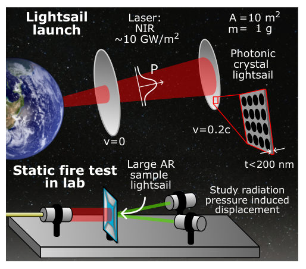
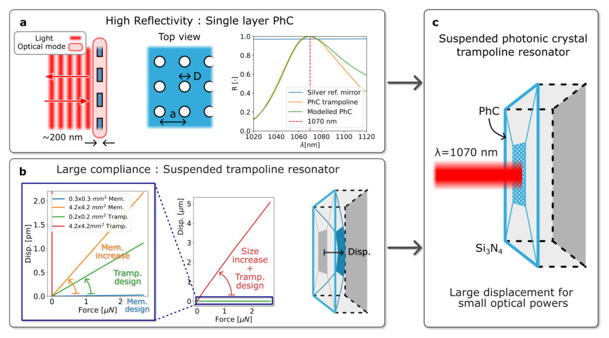
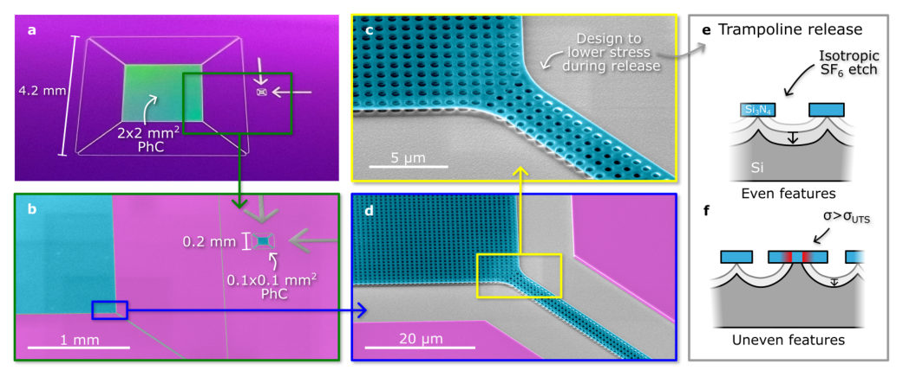
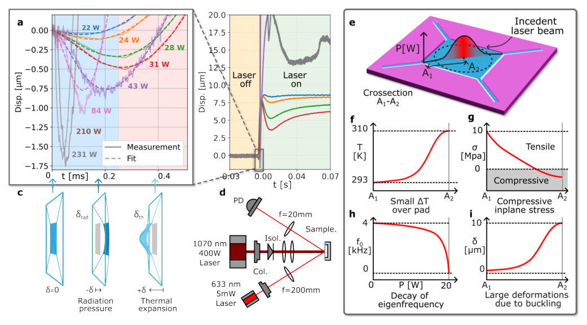
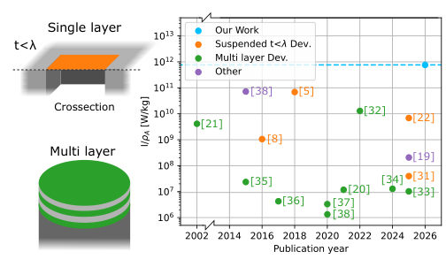
Summary. This research demonstrates the feasibility of using ultra-thin photonic crystal membranes as lightsails by measuring their deflection under high-power laser radiation. The work is significant because it moves beyond simple reflection measurements to quantify complex thermomechanical failure modes, such as buckling, which govern the practical limits of light-driven propulsion.
Why it may be interesting. While not directly quantum mechanical, this work involves extreme light-matter interaction and nanophotonics under intense fields. The coupling between optical loading (radiation pressure) and material response (thermal stress/buckling) presents a rich problem in non-equilibrium physics relevant to advanced energy systems.
Main problem. The research aims to demonstrate measurable radiation-pressure displacement on ultra-thin photonic crystal (PhC) lightsails, advancing the concept of laser-driven propulsion for ultralight spacecraft.
Main result. The authors successfully measured a large prompt displacement ($\sim 1.75 \mu ext{m}$) due to radiation pressure and identified that high power introduces significant thermomechanical effects, including buckling, which must be accounted for in design.
Method. The study combines experimental measurements of deflection under high-power laser illumination with detailed finite element modeling (COMSOL) to analyze both mechanical and thermal responses.
Model / system. The physical system is a suspended, large-area silicon nitride ($ ext{Si}_3 ext{N}_4$) photonic crystal membrane patterned with billions of holes. The model treats the structure as a compliant trampoline subjected to external forces (radiation pressure) and internal stresses (thermal expansion/buckling).
Key observables. Radiation-pressure displacement ($\mu ext{m}$ scale), reflectivity, fundamental mode frequency, and localized compressive stress profiles.
Important parameters / regimes. High optical power densities ($0.3 ext{ GW}/ ext{m}^2$), subwavelength thickness, and the ratio of incident intensity to areal density ($ ext{I}/ ho_A$).
Assumptions / limitations. The analysis assumes that thermal effects (like buckling) are significant and must be modeled alongside the prompt radiation-pressure force; some analyses assume specular reflection for optical readout.
Figures summary. Figures illustrate the PhC trampoline setup, measurement of displacement vs. power across different regimes, and computational results detailing the onset and mechanism of thermal buckling driven by non-uniform heating.
Paper structure. The paper progresses from establishing the physical challenge (creating large, reflective, compliant structures) to presenting experimental measurements showing prompt actuation, followed by detailed modeling that incorporates complex nonlinear thermomechanical effects like buckling at high power.
Laser-driven lightsails have emerged as a promising route for accelerating ultralight spacecraft to high speeds using beamed optical energy. Realizing this concept pushes the limits of light-matter interaction, materials science, structural engineering, and nanomechanical design. A central challenge is to create nanophotonic reflectors that combine ultralow mass, large illuminated area, and survival under high optical power densities. No previous experiment has combined these constraints in a single structure sufficient to produce measurable radiation-pressure displacement. Here, we report the largest subwavelength tethered lightsails to date: nanoscale-thickness, millimeter-wide silicon nitride membranes patterned with billions of holes. Despite their subwavelength thickness, they achieve 99% reflection through resonant photonic modes, combining ultralow areal density with high reflectivity. Their compliance enables radiation-pressure displacements of up to 1.75 micrometer, a 50,000-fold increase over previous lightsail optomechanical responses. These thin mirrors are shown to withstand and maintain high reflectivity under directed laser intensities comparable to optical intensities at the surface of the Sun. Together, these results establish a testbed for high-power nanophotonics, directed-energy systems, and light-driven propulsion, defining the practical limits of ultrathin photonic materials under intense optical loading.
Authors: Joaquim Telles de Miranda, Maxim Khodas, Alex Levchenko
Type: theory · Category: other · PDF: https://arxiv.org/pdf/2606.19421v1
Analysis basis: full PDF text, analyzed in chunks
Topic relevance: Keldysh / 2PI / non-Gaussian methods 1/5 · driven-dissipative phase transition 1/5 · methods for driven-dissipative 1/5 · non-equilibrium dynamics 1/5 · spintronics-quantum-optics interface 1/5
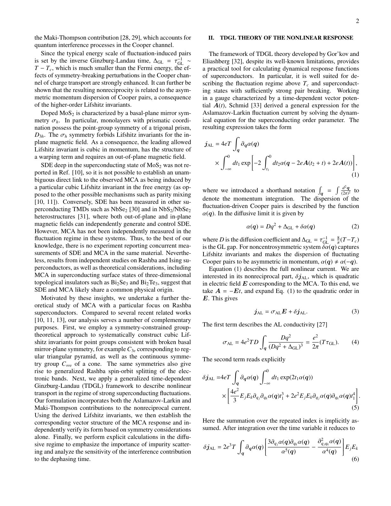
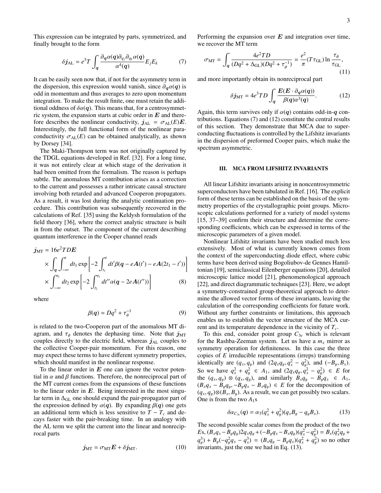
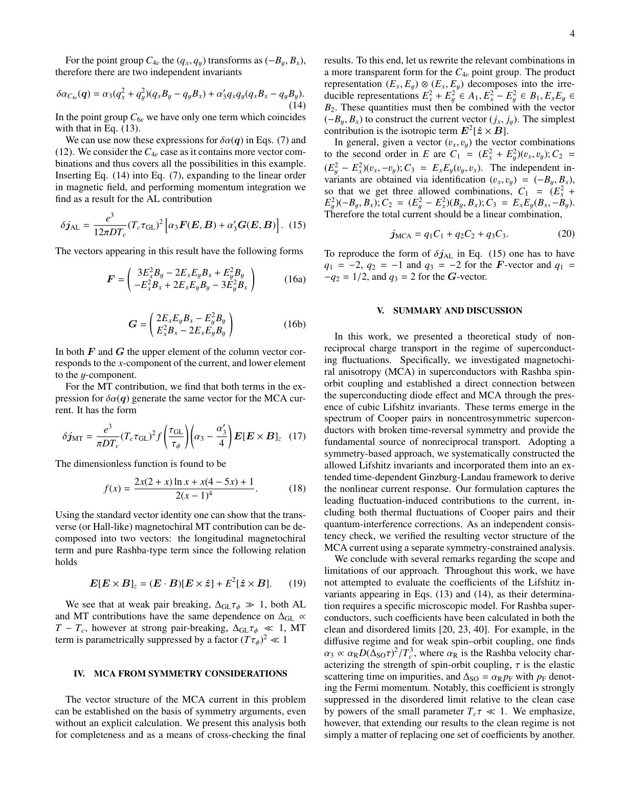
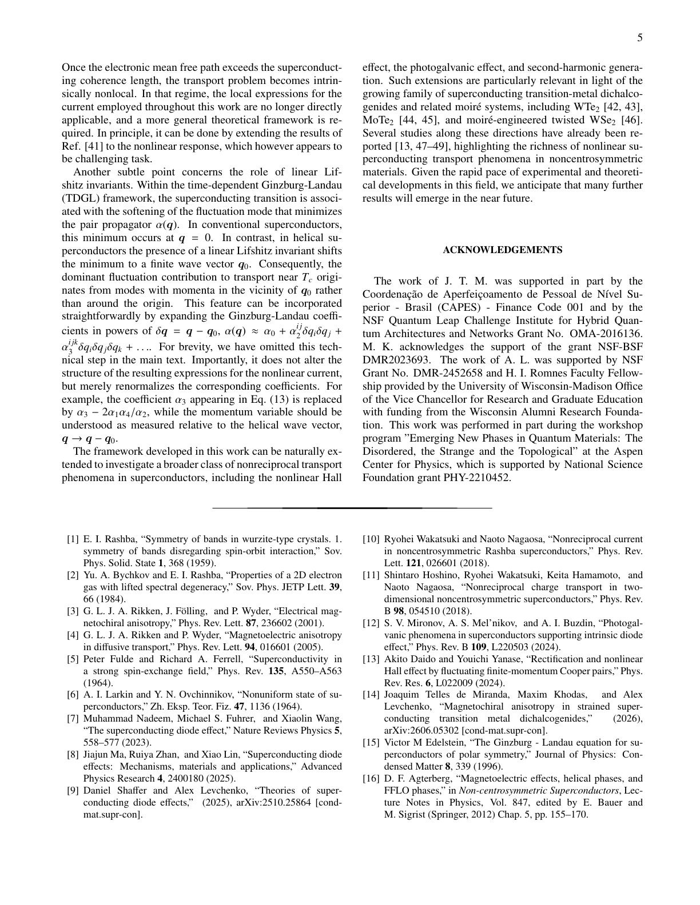
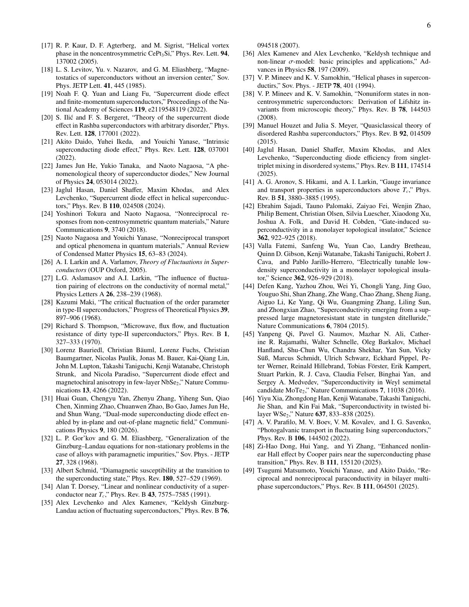
Summary. This theoretical paper investigates how broken inversion symmetry, specifically via Rashba SOC, induces nonreciprocal charge transport known as Magnetochiral Anisotropy in superconductors. Using group theory and Ginzburg-Landau theory, the authors derive explicit formulas for these anomalous currents arising from higher-order terms (Lifshitz invariants). The work is significant for understanding superconducting diode effects in low-dimensional, noncentrosymmetric materials.
Why it may be interesting. This work connects fundamental concepts from symmetry theory (group theory) with advanced condensed matter phenomena like superconductivity and magnetotransport, which is highly relevant for understanding exotic quantum states in novel materials.
Main problem. The study investigates electrical magnetochiral anisotropy (MCA) and nonreciprocal charge transport in two-dimensional superconducting materials.
Main result. The theory derives explicit, symmetry-constrained expressions for the nonreciprocal components of the current ($\delta \mathbf{j}_{AL}$ and $\delta \mathbf{j}_{MT}$) arising from higher-order Lifshitz invariants. These currents are non-zero only when the superconducting dispersion relation exhibits asymmetry.
Method. The analysis employs symmetry-constrained group-theoretical methods to construct allowed Lifshitz invariants, combined with a generalized time-dependent Ginzburg-Landau theory (TDGL) for nonlinear transport in the fluctuation regime.
Model / system. The system modeled is a two-dimensional noncentrosymmetric superconductor characterized by Rashba spin-orbit coupling. The theoretical framework extends to analyze fluctuations near the superconducting transition temperature ($T_c$).
Key observables. Magnetochiral anisotropy (MCA), nonreciprocal current components ($\delta \mathbf{j}_{AL}$, $\delta \mathbf{j}_{MT}$), and critical-current nonreciprocity.
Important parameters / regimes. Temperature relative to $T_c$ (fluctuation regime), disorder scattering time ($ au$), Rashba SOC strength ($\alpha_R$), and electric/magnetic fields ($\mathbf{E}, \mathbf{B}$).
Assumptions / limitations. The analysis assumes the diffusive limit for transport calculations and relies on symmetry constraints derived from point groups like $C_{3v}$ or $C_{4v}$. Nonlocal effects are noted as a limitation.
Figures summary. Not specified, but the notes detail derivations of current equations (Eq. 7, Eq. 12, Eq. 15, Eq. 17) and symmetry decompositions (Eq. 20).
Paper structure. The paper systematically builds the theoretical framework by first identifying the role of Lifshitz invariants via group theory, then applying TDGL to calculate nonreciprocal currents in both the AL and MT contributions, and finally discussing extensions to helical/nonlocal regimes.
We theoretically investigate the role of higher-order Lifshitz invariants in nonreciprocal charge transport in two-dimensional noncentrosymmetric superconductors with Rashba spin-orbit coupling. In the superconducting state, these symmetry-allowed terms give rise to critical-current nonreciprocity, while in the normal state near the superconducting transition they generate a pronounced magnetochiral anisotropy. Using symmetry-constrained group-theoretical methods, we systematically construct the allowed Lifshitz invariants and derive the corresponding vector structure of the nonreciprocal current. To describe nonlinear transport in the fluctuation regime, we apply a generalized time-dependent Ginzburg-Landau theory that incorporates both the Aslamazov-Larkin contribution from fluctuation-induced Cooper pairs and the Maki-Thompson contribution associated with quantum interference in the Cooper channel. We further analyze the effects of disorder scattering and dephasing on the resulting nonreciprocal response.
Authors: Fanzheng Chen, Lixin Zhang, Shuaishuai Niu, Junfeng Ren, Weijiang Gong, Xiangru Kong
Type: theory · Category: other · PDF: https://arxiv.org/pdf/2606.19903v1
Analysis basis: full PDF text, analyzed in chunks
Topic relevance: analog quantum simulation 1/5 · exotic spin models in light-matter 1/5 · spintronics-quantum-optics interface 1/5
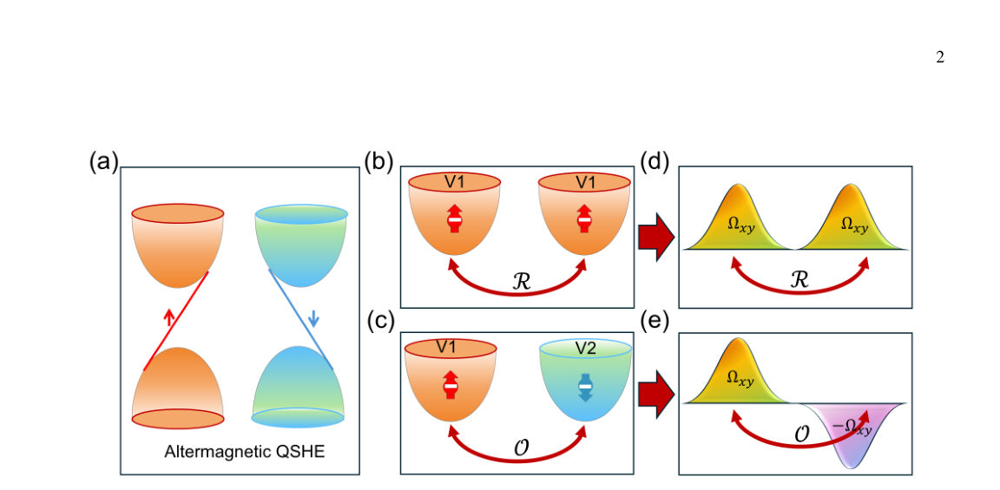
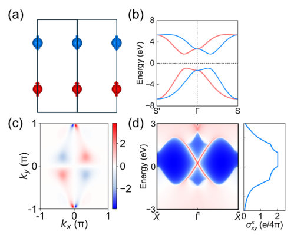
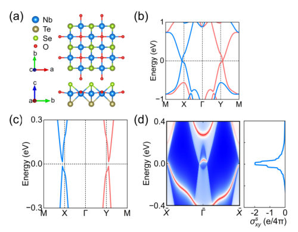
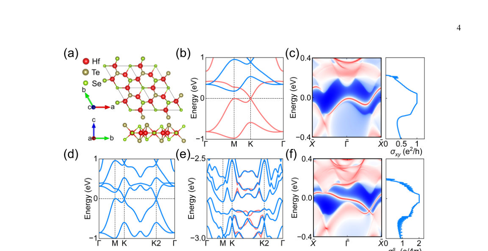
Summary. This paper theoretically investigates the Quantum Spin Hall Effect in altermagnets, extending previous research limited to non-magnetic systems. By performing detailed symmetry analysis on Magnetic Point Groups, the authors identified necessary conditions—such as spin-valley locking—for this topological phase to exist. They successfully demonstrated this effect using first-principles calculations on specific material candidates.
Why it may be interesting. This work provides a deep connection between crystal symmetries (group theory) and emergent quantum phenomena (topological phases), which is highly relevant for designing novel spintronic materials.
Main problem. The research aims to extend the study of the Quantum Spin Hall Effect (QSHE) from non-magnetic materials to altermagnets, which are a novel magnetic state.
Main result. The authors established that the QSHE in altermagnets is intrinsically linked to symmetry constraints, demonstrating this effect in $ ext{monolayer } ext{Nb}_2 ext{SeTeO}$ (via spin-valley locking) and $ ext{bilayer } ext{Hf}_3 ext{Se}_3 ext{Te}_2$ (via spin-valley-layer locking).
Method. The study combines rigorous symmetry analysis using group theory to classify Magnetic Point Groups (MPGs) with first-principles calculations and theoretical modeling of tight-binding Hamiltonians.
Model / system. The focus is on altermagnetic materials, analyzed by establishing relevant symmetry constraints within the framework of 2D magnetic systems. A lattice Hamiltonian was constructed for simulation using Pauli matrices ($ au$ for site, $\sigma$ for spin).
Key observables. Quantized Spin Hall Conductance ($C_s$), helical edge states, and topological invariants derived from Berry curvature analysis.
Important parameters / regimes. The classification of MPGs into Type I and Type III groups is crucial; the specific lattice Hamiltonian parameters ($t_i, r_i$) govern the electronic structure.
Assumptions / limitations. The primary assumption is that the QSHE in altermagnets is dictated by symmetry protection mechanisms involving spin-valley locking or layer locking.
Figures summary. Figures illustrate the schematic of QSHE with SVL, list capable MPGs (Table I), and show band structures/edge states derived from lattice models for candidate materials.
Paper structure. The paper proceeds by first establishing the theoretical framework via symmetry analysis to constrain possible magnetic point groups. It then applies this framework using tight-binding Hamiltonians to model specific altermagnetic candidates, culminating in the demonstration of quantized topological edge states.
The quantum spin Hall effect (QSHE) has attracted widespread attention due to its dissipationless transport, which is protected by non-trivial topological invariants and helical edge states. Because even weak magnetic disorder can destroy the stability of topological quantum states, current research on the QSHE has primarily focused on non-magnetic materials. In this work, we extend the research scope of the QSHE to altermagnets. We establish the relevant symmetry constraints and identify all magnetic point groups that can realize the altermagnetic QSHE. Symmetry analysis reveals that pronounced spin-valley locking or spin-valley-layer locking universally exists in these systems. The concerted interaction between band inversion and spin-valley locking collectively gives rise to the helical edge states. Using first-principles calculations and theoretical models, we demonstrate that monolayer Nb2SeTeO exhibits an altermagnetic QSHE characterized by spin-valley locking, while bilayer Hf3Se3Te2 manifests an altermagnetic QSHE featuring spin-valley-layer locking. This work clarifies the intrinsic symmetry correlation between altermagnetism and quantum spin Hall topological phases, providing a brand-new theoretical perspective and research platform for exploring magnetic topological systems and developing next-generation spintronic devices
Authors: Akash Adhikary, Sunit Das, Divya Sahani, Aveek Bid, Amit Agarwal
Type: theory · Category: other · PDF: https://arxiv.org/pdf/2606.20339v1
Analysis basis: full PDF text, analyzed in chunks
Topic relevance: Keldysh / 2PI / non-Gaussian methods 1/5
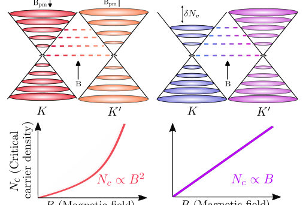
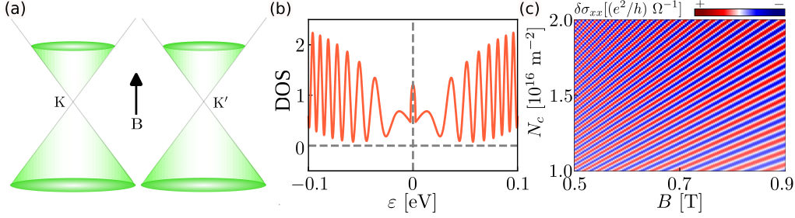
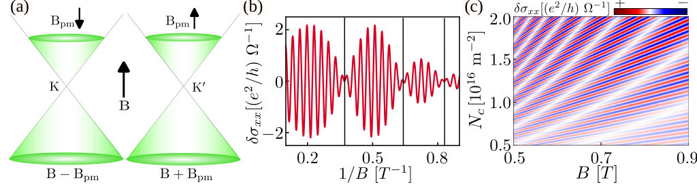
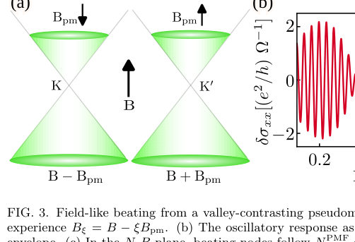
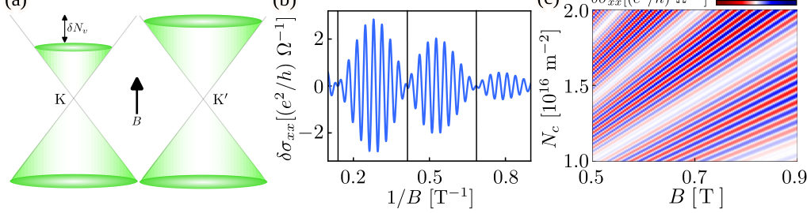
Summary. The paper presents a comprehensive theoretical framework to diagnose the microscopic origin of beating patterns observed in quantum oscillations in graphene. By deriving and comparing characteristic scaling relations for the node positions in the carrier density-magnetic field plane, it distinguishes between effects like strain-induced pseudomagnetic fields and intrinsic valley imbalances. This provides quantitative constraints for understanding band structure physics in 2D materials.
Why it may be interesting. This work provides a powerful theoretical tool for interpreting complex quantum transport measurements in 2D materials. The diagnostic approach—mapping physical mechanisms onto distinct mathematical scaling laws—is highly valuable for condensed matter theorists studying emergent phenomena.
Main problem. The primary goal is to develop a quantitative diagnostic framework to distinguish between various microscopic origins (e.g., strain, valley imbalance, spin-orbit coupling) responsible for beating patterns observed in quantum oscillations within graphene.
Main result. By analyzing the scaling relations of the critical carrier density ($N_{c,j}$) and magnetic field ($B_{c,j}$) at the beating nodes, the authors provide distinct signatures: PMF leads to $N_{c,j} \propto (2j+1) B_{c,j}^2$, while linear imbalance yields $N_{c,j} \propto (2j+1) B_{c,j}$.
Method. The analysis starts from Onsager's quantization relation and models the total response as an interference pattern between two nearby oscillatory contributions. This leads to deriving scaling laws for the node positions based on different physical assumptions.
Model / system. The system is graphene-based hexagonal lattices exhibiting magnetic quantum oscillations (SdH/dHvA effects). The theoretical framework involves analyzing the magnetoconductivity ($\sigma_{xx}$) and relating beating nodes to specific forms of energy splitting or density imbalance in the carrier population.
Key observables. Beating node positions ($N_{c,j}$ vs $B_{c,j}$), the ratio $ u_{c,j} / N_{ ext{osc},j}$, and the power-law dependence of these nodes on $B$ (e.g., $B^2$ vs $B$).
Important parameters / regimes. Carrier density ($N$), magnetic field ($B$), pseudomagnetic field magnitude ($|B_{pm}|$), and the index $j$ labeling the beating node.
Assumptions / limitations. The analysis assumes that the beating is governed by two dominant, comparable oscillatory channels, allowing for the application of interference formulas derived from Onsager's quantization relation. Approximations are made regarding weak field limits ($B_{pm}/B \ll 1$).
Figures summary. Figures illustrate the diagnostic plane in the N-B space showing distinct trajectories for PMF beating (quadratic $B$ dependence) versus density imbalance (linear $B$ dependence). Table I summarizes these scaling rules.
Paper structure. The paper builds a unified framework by deriving node conditions from different physical sources (PMF, linear/square-root density imbalance), establishing universal consistency checks (like the ratio $ u_{c,j}/N_{ ext{osc},j}$), and summarizing these diagnostics in tables to guide experimental interpretation.
Magnetic quantum oscillations are usually periodic in inverse magnetic field, and their amplitude can show beating when two nearby frequencies interfere. In graphene-based hexagonal systems, such beating can arise from strain-induced pseudomagnetic fields, unequal valley populations, valley-dependent energy shifts, spin-orbit coupling-induced band splitting, or Kekulé distortions. Here, we show that the carrier density and magnetic field dependence of the beating nodes can distinguish these mechanisms. Starting from Onsager's quantization relation, we derive scaling relations for the critical carrier density $N_c$ for the beating nodes as a function of critical magnetic field $B_c$. A pseudomagnetic field gives $N_c\propto B_c^2$, whereas a density-independent valley imbalance gives $N_c\propto B_c$. A constant Dirac-band energy splitting by Zeeman-like spin-orbit coupling also gives quadratic field scaling, but with a different node sequence: $N_{c,j}\propto(2j+1)B_{c,j}^2$ for a pseudomagnetic field and $N_{c,j}\propto(2j+1)^2B_{c,j}^2$ for energy splitting, where $j$ labels the beating node indices. These results provide quantitative constraints on different microscopic origins of valley- and spin-dependent band splittings in graphene-based systems.
Authors: Thomas J. Smart, Marc Neis, Janine Lorenz, Marcello P. Guardascione, Roudy Hanna, Michael Schleenvoigt, Yuan Gao, Joscha Domnick, Benjamin Bennemann, Abdur Rehman Jalil, Jin Hee Bae, Harsh Bhardwaj, F. Stefan Tautz, Felix Lüpke, Detlev Grützmacher, Rami Barends, Pavel A. Bushev, Peter Schüffelgen
Type: experiment · Category: other · PDF: https://arxiv.org/pdf/2606.20317v1
Analysis basis: full PDF text, analyzed in chunks
Topic relevance: QC/QI experiment 1/5
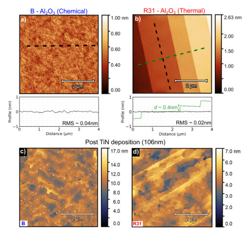
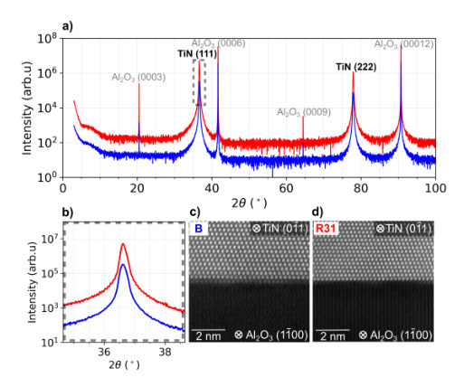
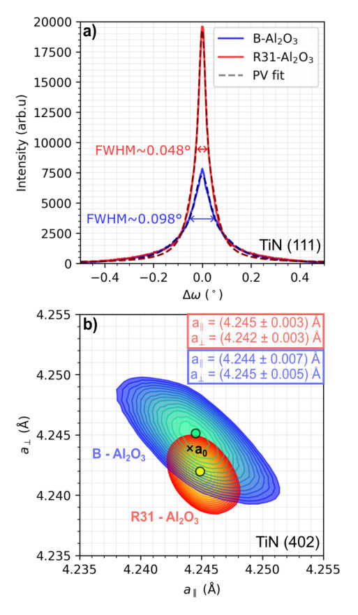
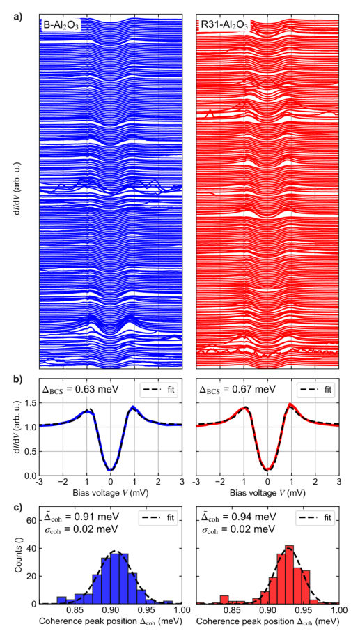
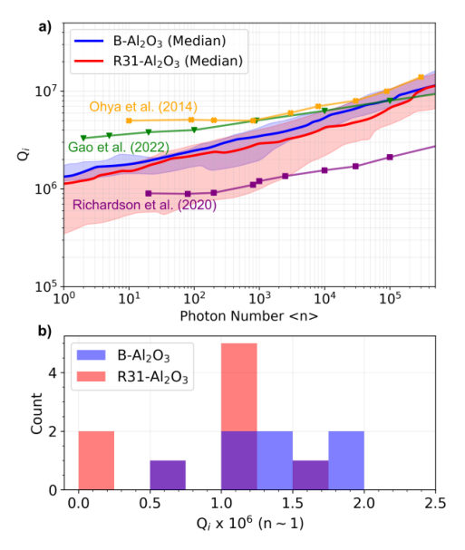
Summary. This paper demonstrates that thermal reconstruction of sapphire using a $ ext{CO}_2$ laser is an effective alternative to harsh chemical cleaning for preparing substrates. By growing superconducting TiN films on these reconstructed surfaces and fabricating microwave resonators, the authors show comparable, state-of-the-art performance ($Q_i > 10^6$) compared to chemically treated controls.
Why it may be interesting. The work directly addresses materials science challenges in quantum hardware fabrication by proposing a scalable, non-destructive substrate preparation technique that maintains high-performance superconducting properties.
Main problem. To find an alternative, non-chemical method for preparing sapphire substrates that maintains or improves the superconducting performance of epitaxial TiN films used in high-quality microwave resonators.
Main result. Thermal reconstruction of the sapphire substrate ($ ext{R}31- ext{Al}_2 ext{O}_3$) yields $ ext{TiN}$ films and fabricated resonators with superconducting properties ($Q_i > 10^6$) comparable to those grown on chemically cleaned substrates.
Method. The study compares two substrate preparations—chemical cleaning versus laser-induced thermal reconstruction—followed by epitaxial growth of TiN via MBE, and subsequent characterization using cryogenic microwave measurements (VNA) and advanced structural techniques (XRD, AFM).
Model / system. The physical system involves superconducting Titanium Nitride ($ ext{TiN}$) thin films grown epitaxially on $ ext{Al}_2 ext{O}_3$ sapphire substrates. The performance is assessed using coplanar waveguide (CPW) resonators operating at microwave frequencies.
Key observables. Internal quality factor ($Q_i$), superconducting pairing gap ($\Delta_{ ext{BCS}}$), film crystallinity (measured via XRD rocking curves and RSMs), and surface roughness (AFM).
Important parameters / regimes. Operating temperature ($\sim 20 ext{ mK}$ to $1.2 ext{ K}$), substrate reconstruction type ($ ext{R}31$ vs. bare), film thickness ($106 ext{ nm}$).
Assumptions / limitations. The primary assumption is that the structural quality of the interface dictates device performance, and that thermal reconstruction provides a stable alternative to aggressive chemical etching.
Figures summary. Figures compare AFM topographs, show $ ext{S}_{21}$ data curves for resonators on both substrate types, and present histograms/median values for the internal quality factor ($Q_i$) at single photon levels.
Paper structure. The paper follows a comparative experimental structure: first establishing the need for better substrates; then detailing the preparation of two distinct sapphire surfaces ($ ext{B-Al}_2 ext{O}_3$ vs. $ ext{R}31- ext{Al}_2 ext{O}_3$); followed by epitaxial growth and characterization (structural, superconducting gap via STM/STS); concluding with microwave resonator performance measurements ($Q_i$).
High quality crystalline growth of a thin film on sapphire requires sufficient substrate preparation, often achieved via the use of aggressive chemical cleaning. Direct thermal reconstruction of the sapphire substrate via a CO$_2$ laser beam may allow for an alternative way to prepare the substrate for epitaxy without the use of any chemical processing. Within this work, we demonstrate that thermal annealing of sapphire into its ($\sqrt{31}@@MATH0MATH@@\sqrt{31}$)$R$$\pm$9° reconstruction is a valid alternative preparation technique for sapphire substrates. TiN films grown via plasma-assisted molecular beam epitaxy upon these substrates exhibit greater crystallinity than those grown on chemically cleaned sapphire substrates. Superconducting resonators fabricated from these films exhibit similar performance, with many possessing internal quality factors at single photon levels greater than 10$^6$ for both substrate preparation methods.